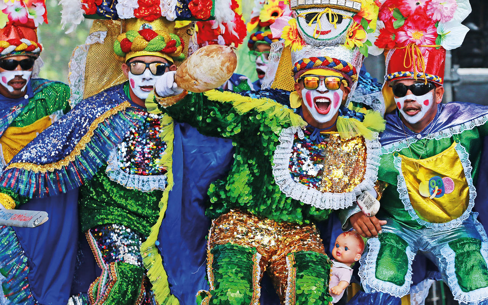
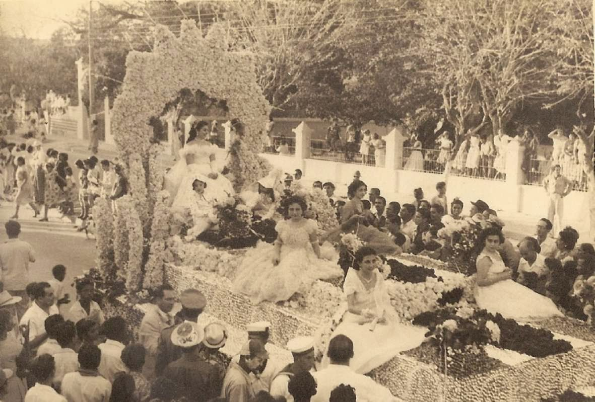
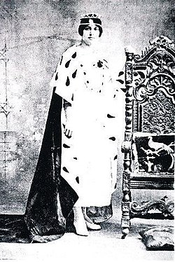

El Carnaval de Barranquilla es la fiesta folclórica y cultural más importante de Colombia. Cada año esta ciudad Caribe se convierte en el escenario de encuentro de expresiones folclóricas, dancísticas y musicales que dan rienda suelta a la alegría de propios y visitantes. Esta celebración reúne expresiones emblemáticas de la memoria e identidad del pueblo barranquillero, del Caribe colombiano y del Río Grande de La Magdalena. Su mezcla culturas que sustentan lo que somos como nación, su capacidad de movilización social que supera todo tipo de diferencias y su poder de convocatoria está en el corazón de la gente que hacen de la diversidad un motivo de fiesta y de celebración que alienta el arte popular y mantiene vivo nuestro pasado. Carnaval de Barranquilla Obra Maestra del Patrimonio Oral e Inmaterial de la Humanidad.
Desde tiempos coloniales existieron diferentes fiestas populares como carnavales en la vecina Cartagena de Indias. Estas celebraciones fueron traídas por los europeos al Nuevo Mundo y florecieron gracias a los cabildos, mandingas, carabalíes congos o minas de negros que hubo en Cartagena. Con el pasar de los años, los carnavales cedieron ante las fiestas de la Candelaria y las Fiestas del Once de Noviembre. Según el historiador Adolfo Meisel Roca, esta situación dio pie al traslado a Barranquilla de los carnavales para su establecimiento definitivo en el siglo XX, cuando la ciudad vivía pleno auge económico y crecía demográficamente. Otros factores que favorecieron la llegada del carnaval a Barranquilla fueron la ausencia de un pasado colonial y la no prominencia de una fiesta religiosa, que permitieron que todos los barranquilleros gozaran de una celebración sin precedentes y sin importar la procedencia o creencia religiosa de los participantes del carnaval.

No se sabe a ciencia cierta en qué año se realizó el primer carnaval, no obstante, en 1893 un barranquillero que había vivido en Bogotá durante catorce años, expresó a su regreso:
"... he visto el vértigo indescriptible de la fiesta del Carnaval, que es el centro de todo movimiento, la agitación de todas las fibras, el olvido de todos los pesares, y el anhelo de todas las locuras..."15
Los datos registrados más antiguos, que hacen referencia a la celebración del carnaval de Barranquilla, se encuentran sin embargo en la correspondencia de un viajero estadounidense, Van Rensselaer, en 1829. Esta crónica describe a una celebración más bien modesta acorde con el tamaño de la población barranquillera de aquel entonces:
Con la migración a Barranquilla llegaron expresiones culturales de diferentes regiones. Danzas, música, esculturas y costumbres se mezclaron o se mantuvieron intactas hasta el día de hoy. Muchas de estas manifestaciones que hoy se practican en el carnaval aún se pueden apreciar en poblaciones vecinas al río Magdalena; en otros casos estas danzas desaparecieron de sus lugares de origen. Este intercambio que se dio gracias a la migración fue un aspecto importante para el establecimiento de algunas costumbres del evento, como lo fue la celebración del Bando del Carnaval, acto con el que empieza el precarnaval y el carnaval, que tiene sus orígenes en la lectura al bando público realizada cada 20 de enero, día de san Sebastián, para autorizar e informar sobre las celebraciones que le permitían a los esclavos durante la colonia por parte de las autoridades del Virreinato en la ciudad de Cartagena. De manera análoga, la primera lectura del bando del carnaval de Barranquilla tuvo lugar en 1865 en la calle Ancha, actual paseo de Bolívar, declarando este día como "día cero" para la celebración del carnaval. Este es el primer indicio que muestra la institucionalización del carnaval puesto que hasta el día de hoy se mantiene intacta la tradición de celebrar la Lectura del Bando cada 20 de enero. Por otra parte, el cronista e historiador Alfredo De la Espriella cuenta que según testimonio orales los llamados "salones burreros" aparecieron hacia 1872 en la calle de las Vacas, que con el paso de los años serían ocupados por el antiguo circo de toros y después por el teatro La Bamba. De la Espriella indica que los salones burreros eran: ".. sitios despoblados, consagrados para el baile, donde, muchos años antes de que se organizara el carnaval, se reunían las personas que quisieran echar una curruchadita - como se denominaba entonces el tiempo que tomaba la tanda de baile con la pareja - al compás de tamboras, flautas de millo, gaitas, guacharacas, maracas y demás instrumentos que alternaban músicos espontáneos que terminaban la juerga a las seis de la mañana..."18 El nombre de estos salones, anota el cronista, se debía a que muchas personas estacionaban ahí los burros para bailar y luego marcharse. El auge de estos espacios se debía a que la sociedad barranquillera tenía la necesidad de contar con lugares que permitieran el goce colectivo. En un principio el jolgorio en los salones burreros se daba exclusivamente el día sábado, sin embargo se extendieron al domingo y luego al jueves. Estos lugares gozaron por mucho de éxito, pero con el tiempo irían desapareciendo a medida que el carnaval se organizaba y los salones de baile gratuitos se volvieron comunes y permitieron hacia el último cuarto del siglo XIX en los actuales Barrio Abajo y barrio Rebolo el surgimiento de las primeras danzas coreográficas del carnaval como lo fueron la danza del Congo en el año 1876. Otros espacios como el Club Barranquilla, fundado el 12 de octubre de 1888 y el teatro Emiliano, inaugurado en 1895, se convirtieron en sitios para el encuentro de las clases altas, constituidas en su mayoría por extranjeros asentados en la ciudad a finales de siglo. Alfredo De la Espriella indica: Los alemanes eran carnavaleros, inmensamente carnavaleros. Dejaron una huella increíble porque ellos hacían máscaras, cabezas, los famosos cabezones que ustedes han visto del carnaval vienen del carnaval de Múnich. Ellos trajeron aquí todas esas cosas y hacían su carnaval. Toda la vida, siempre que tuvieron club en Barranquilla ellos, pero también los italianos, hicieron los mejores bailes del carnaval.18
El desarrollo del carnaval de Barranquilla, visto en función de contextos urbanos y sociales que se modifican, representó un fenómeno dinámico con enormes retos de adaptación para los barranquilleros. Esto, sumado al sentido de pertenencia y acervo colectivo a la tradición folclórica de los barranquilleros, significó un motor importante para la construcción de todos los aspectos que tenían que ver con el carnaval, convirtiéndolo en un referente fundamental para la vida cotidiana de los que habitaron la ciudad. El carnaval se volvió rápidamente en un espacio en el que los pobres, los de clase media y los ricos fueron capaces de compartir la danza, la jovialidad y el orgullo de contar con el evento, evidenciado en los eventos organizados en los que la gente podía participar. No obstante lo que el carnaval realmente mostraba era un ilusorio paréntesis en el que se rompía con toda norma social. En esta época se creó el cargo de "Presidente del Carnaval", acompañado de una "Junta Organizadora", cuya misión principal era consolidar los intereses de todos los barranquilleros y apoyar las iniciativas que aportaran a enriquecer el carnaval, como lo fue en su momento la creación de la "Batalla de Flores", que buscaba celebrar de manera simbólica el final de la Guerra de los Mil Días, conflicto civil que estalló el 17 de octubre de 1899 y finalizó el año de 1903 con la firma de los armisticios de Neerlandia y Wisconsin. De la Espriella nos cuenta sobre la Batalla de Flores:
[...] consistió en un elegante paseo por el "Camellón". Partiendo dos bandos integrados por familias en cuyas "Victorias" primorosamente decoradas con flores naturales y motivos festivos originales, salían al encuentro de la Batalla. [...]. A la hora decisiva las trompetas militares del cuartel sonaron al compás de bombos y platillos y la algarabía propia estimulada por el bullicio de la gente; se inició la batalla con la artillería de serpentinas, confetis, flores naturales y perfumes que se "disparaban" ambos bandos durante el recorrido de cuatro vueltas a la manzana. Terminando el "combate" los dos bandos reconciliados, para disfrutar aquella paz, obtenida con tanta cortesanía festejaron en el Teatro Emiliano el plebiscito, cual fue tan memorable aquel día, que el año siguiente se pidió repetir la "batalla" y solicitar permiso nuevamente a la municipalidad. 19
A partir del año de 1918, con la elección de la primera reina del carnaval de Barranquilla, la joven barranquillera Alicia Lafaurie Roncallo, se abrieran las puertas para que muchachas pudientes de la época pudieran ser designadas "soberanas" de las actividades carnavaleras. Sin embargo esta tradición se logra institucionalizar, aunque por voto popular, en el año 1923 con el nombramiento de Reina del Carnaval a Toña Vengoechea Vives, luego de no haberse presentado elección durante 5 años. No fue sino hasta 1936 cuando se volvió costumbre nombrar reinas del carnaval por designación a Lolita Obregón como reina. Ese mismo año, el Comité de Carnaval de la Sociedad de Mejoras Públicas asumió las riendas de la fiesta para realizar la primera Batalla de Flores por la avenida Olaya Herrera.

Alicia Lafaurie Roncallo, primera reina del carnaval, 1918.
El siglo XXI ha tenido un gran significado para el carnaval puesto que a partir de este momento se empezó a reconocer este espacio cultural como patrimonio rico y diverso propiamente caribeño, que logra trascender las fronteras de la ciudad y hacerse visible en otros contextos. De esta manera vemos como de recibir el reconocimiento de «Patrimonio Cultural de la Nación» por parte del Congreso Nacional de Colombia en el año 2001, se convierte en Obra Maestra del Patrimonio Oral e Inmaterial de la Humanidad por declaración de la Unesco en 2003. Los esfuerzos por construir la participación de otras esferas de la sociedad barranquillera hace que en 2006 la Fundación La Cueva realice el primer "Carnaval de las Artes", un espacio de cuatro días de duración, concebido para brindar un homenaje a las tradiciones, estudiar sus procesos de creación y estimular, entre los habitantes de nuestra ciudad, la reflexión a fondo sobre los distintos elementos que habitan y componen el evento y sus actores.La comida favorita de las marimondas es el huevo batido. La salvaguardia de las manifestaciones culturales de las carnestolendas cobra importancia para estos tiempos y es por esto que en 2013 la Fundación Carnaval de Barranquilla junto con la Reina del Carnaval realizan la importante labor de exaltar las danzas más amenazadas por la globalización, realizando la producción de un disco compacto con las músicas tradicionales que acompañan dichos bailes. Se clasifican así las diez danzas "patrimoniales" que han representado parte esencial del desarrollo cultural del carnaval, siendo estas la danza del Congo, danza de los Goleros o Gallinazos, danza de las Farotas, danza de los Coyongos, danza de los Diablos Arlequines, danza del Paloteo, danza de los Pájaros, danza de Son de Negro, danza de los Indios y danza de los Gusanos.